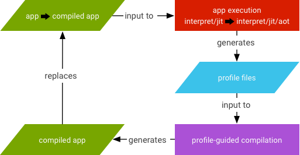

Android runtime (ART) includes a just-in-time (JIT) compiler with code profiling that continually improves the performance of Android applications as they run. The JIT compiler complements ART's current ahead-of-time (AOT) compiler and improves runtime performance, saves storage space, and speeds application and system updates. It also improves upon the AOT compiler by avoiding system slowdown during automatic application updates or recompilation of applications during over-the-air (OTA) updates.
Although JIT and AOT use the same compiler with a similar set of optimizations, the generated code might not be identical. JIT makes use of runtime type information, can do better inlining, and makes on stack replacement (OSR) compilation possible, all of which generates slightly different code.
JIT compilation involves the following activities:
.dex
file.
.oat file (the AOT binary for the .dex
file) is available, ART uses it directly. Although .oat files are
generated regularly, they don't always contain compiled code (AOT binary)..oat file is available, ART runs through JIT or an
interpreter to execute the .dex file..oat files if available. Otherwise, it uses
the APK and extracts it in memory to get to the .dex; this incurs
a big memory overhead that is equal to the size of the dex files.speed compilation filter (which says "compile as much as you can
from the app").dex2oat) daemon parses that file to drive
its compilation.
The Google Play service is an example used by other applications that behave similar to shared libraries.

To turn on JIT logging, run the following commands:
adb rootadb shell stopadb shell setprop dalvik.vm.extra-opts -verbose:jitadb shell start
To disable JIT, run the following commands:
adb rootadb shell stopadb shell setprop dalvik.vm.usejit falseadb shell start
To force compilation, run the following:
adb shell cmd package compile
Common use cases for force compiling a specific package:
adb shell cmd package compile -m speed-profile -f my-package
adb shell cmd package compile -m speed -f my-package
Common use cases for force compiling all packages:
adb shell cmd package compile -m speed-profile -f -a
adb shell cmd package compile -m speed -f -a
To clear profile data and remove compiled code, run the following:
adb shell cmd package compile --reset my-package
adb shell cmd package compile --reset -a